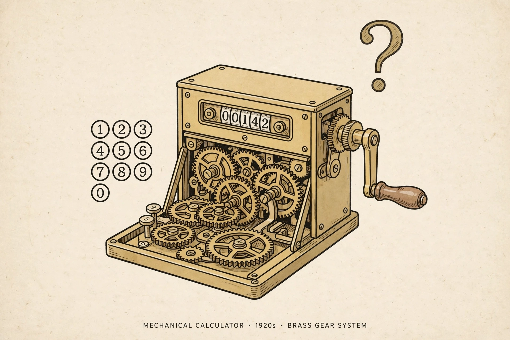

Entscheidungsproblem

[Image: A 1920s-style mechanical calculator with question marks, evoking Hilbert's decision problem]
The Entscheidungsproblem (German for 'decision problem') was posed by David Hilbert and Wilhelm Ackermann in 1928: is there an algorithm that takes any statement in first-order logic and decides, in finite time, whether it is universally valid?
The answer, given independently in 1936 by Alonzo Church (using lambda calculus) and Alan Turing (using his machines and the halting problem), is no. There is no mechanical procedure for validity in first-order logic, even though Gödel had shown the logic is complete — provability and decidability are different things.
Legacy
Solving the Entscheidungsproblem forced the first precise definitions of 'algorithm' and 'computation', founding theoretical computer science. Restricted fragments of logic are decidable and are still mapped today.
Hilbert expected a positive answer, in line with his conviction that in mathematics there is no 'ignorabimus' — we must know, we shall know.